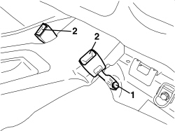
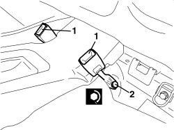

7065B14 ANCHORAGE ROD FOR (ONE) REAR SEAT BELT LEFT OR RIGHT - R.R.
- Path
- Procedures > 70 FITTINGS > 7065 SEAT BELTS AND ACCESSORIES > 7065B REAR SEAT BELTS > 7065B14 ANCHORAGE ROD FOR (ONE) REAR SEAT BELT LEFT OR RIGHT - R.R.
- Kind
- repair procedure (removal / refitting; the operation number is the code)
- Applies to
- all engines; all production periods
- Interactive page
- https://sloeber94.github.io/elrnDB-aBrrSpdr/en/#/946002695
Applies to: all engines; all production periods
 Removing
Removing
 Refitting
RefittingOp. 7050A22 REAR SEAT CUSHION - R+R
1. Undo the bolt.
2. Remove the mounting rod.

Applies to: all engines; all production periods
Refitting
Removing- Check that the mounting rod is not damaged.
1. Position the anchorage link.
2. Tighten the bolt.

Applies to: all engines; all production periods
Topics linked from this page (1)
Topics that link to this page (14)
- O030 THE SEAT BELT DOES NOT ATTACH TO THE BUCKLE
- O031 SEAT BELTS LOCKED
- S060 REAR CREAKING
- 1040A10 FUEL TANK - R + R AND DECANT FUEL
- 1040A14 FUEL TANK - R + R FOR REPLACEMENT
- 1040A70 SUBMERGED PUMP ASSEMBLY COMPLETE WITH LEVEL GAUGE CONTROL - R + R
- 1040B36 REAR FUEL DELIVERY LINE - R.R
- 1040B56 REAR FUEL RETURN PIPE - R.R.
- 5505A68 CABLE LOOM FOR CONSOLE UNDER DASHBOARD AND/OR TUNNEL COVER - R.R. OR REPLACE
- 5580E34 CAR ANTI-THEFT DEVICE ANTI-LIFT SENSOR - R.R. FOLLOWING ELECTRICAL CIRCUIT CHECK
- 5580H12 PARKING OBSTACLE DETECTION DEVICE BUZZER - R.R.
- 7040L10 PASSENGER COMPARTMENT FLOOR COVERING - R.R.
- 7040L20 TUNNEL COVER - R.R
- 7040L22 REAR COVER ON TUNNEL - R.R.